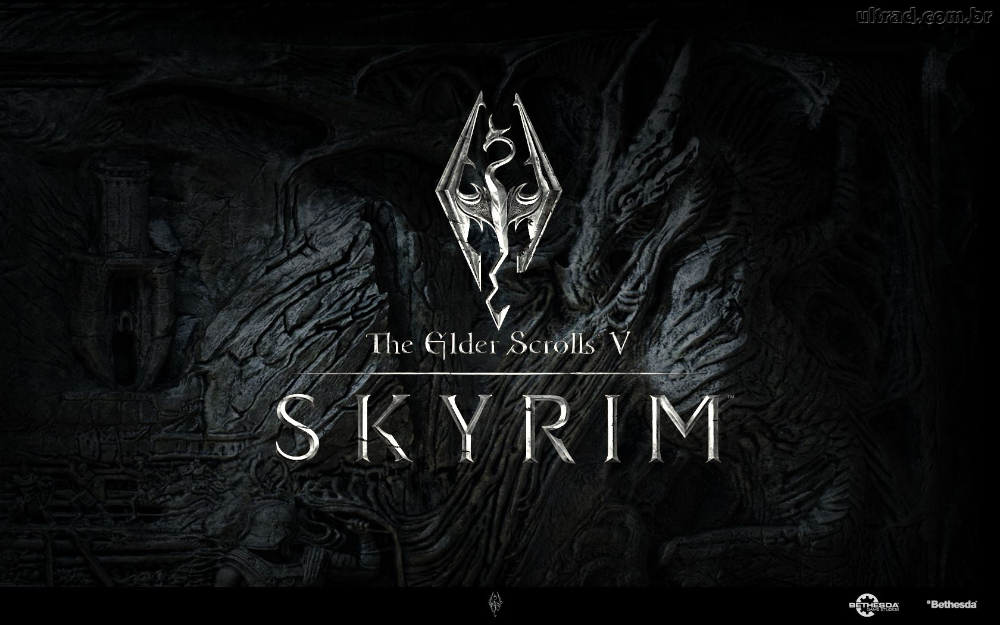
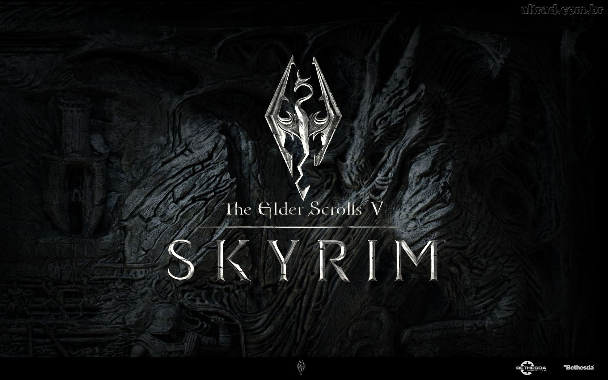

Filmes e Series

YouTube.

Meus Games.
 

Meu nome é Guilherme Buchman, nascido no dia 22/03/1997 em Toledo na região oeste do Paraná.
Filho de Ivania Bez Buchman e Pedro Amarildo Buchman. Tenho uma irmã mais velha chamada Ana Paola Buchman,
que já terminou seu curso de graduação de Processos Químicos na (UTFPR)Universidade Tecnológica Federal do Paraná.
Encerrei o ensino médio na Escola Estadual Porto Alegre.
Sempre fui metido em mexer com computadores, então resolvi apos o termino do ensino médio buscar conhecimentos
maiores na área. Foi ai então que entre na UTFPR no curso de TSI (Tecnologia de Sistemas para Internet).
Atualmente trabalho na empresa Indústria e Laticínio Lactam Bom localizado na Estrada Adroaldo bombardelli
saída para cascavel, na área de TI.
Em meu setup atualmente utilizo um I7 4770, placa mãe AsRock z87 Extreme4 (SLI), 8 GB de Memoria RAM, Fonte cs750M da Corsair, 1 TB de HD e a peça principal, uma placa de vídeo da EVGA 1070 FTW. Teclado Azone 3, Mause Razer DeathAdder 6400dpi e Monitor Philips 23 polegadas.
Nas horas vagas Gosto de assistir a filmes, séries, assistir vídeos no YouTube, ouvir música e principalmente de games.